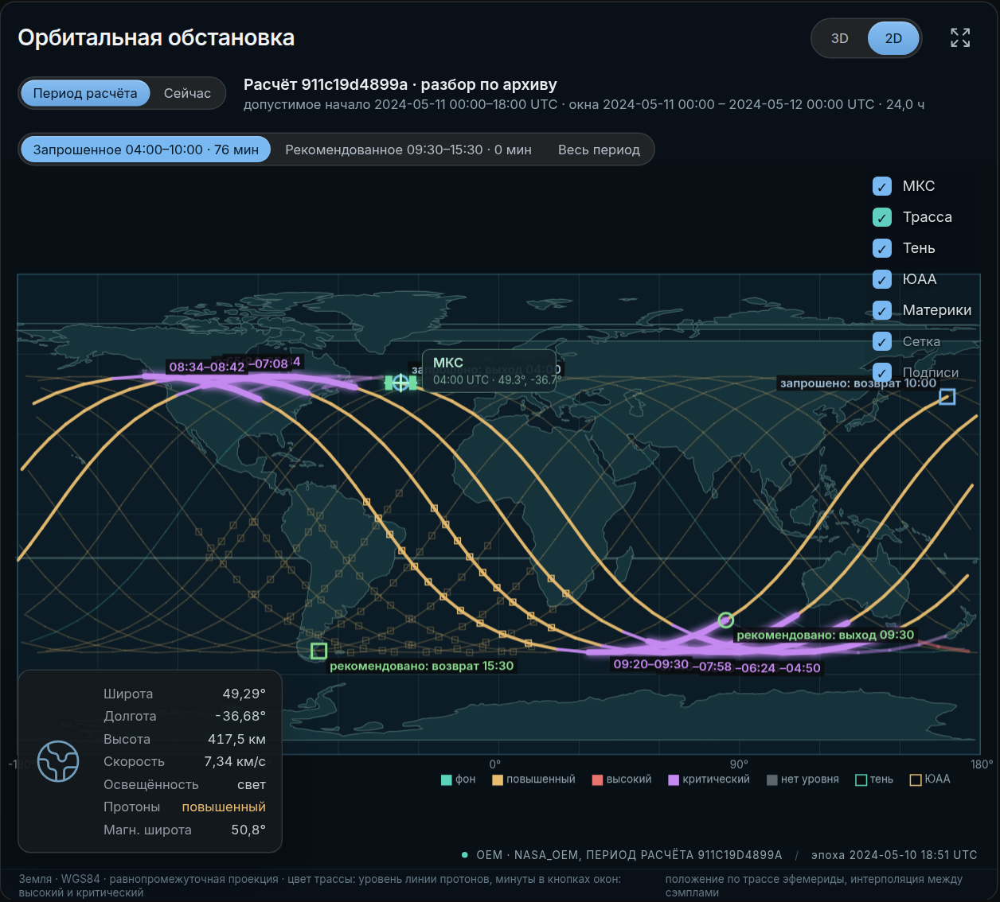
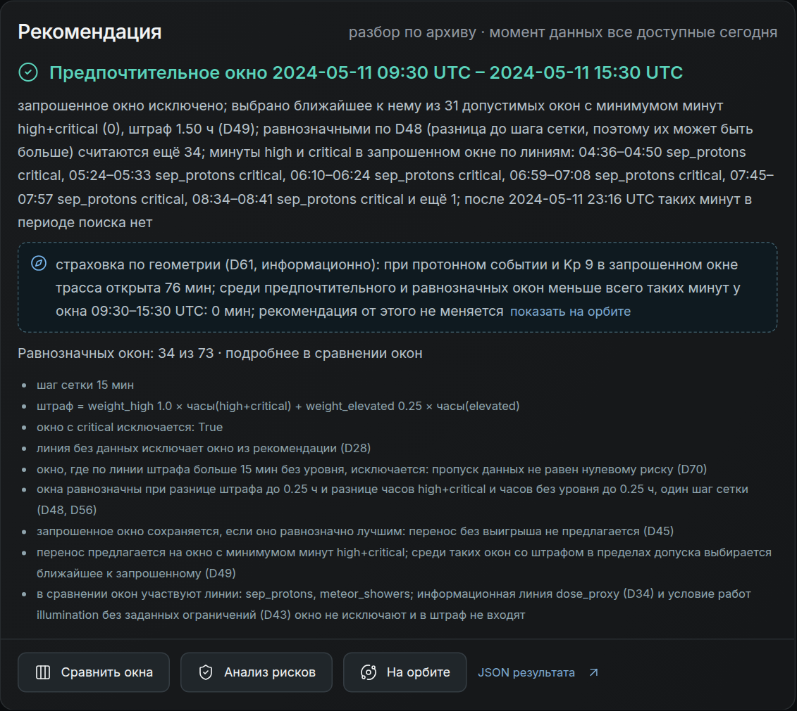
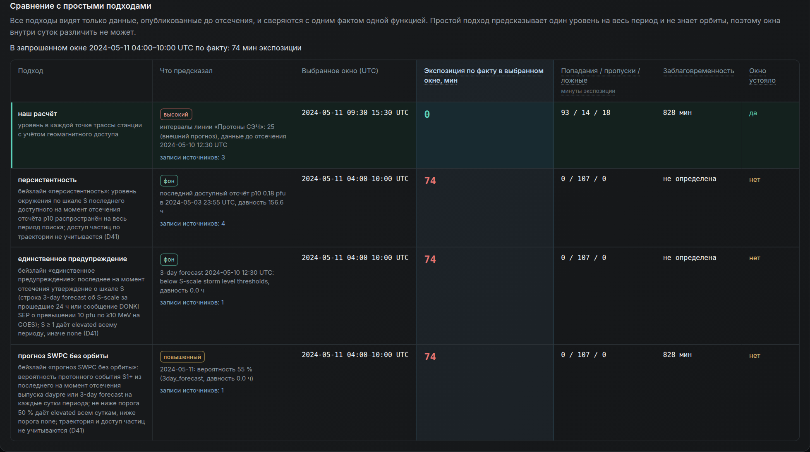
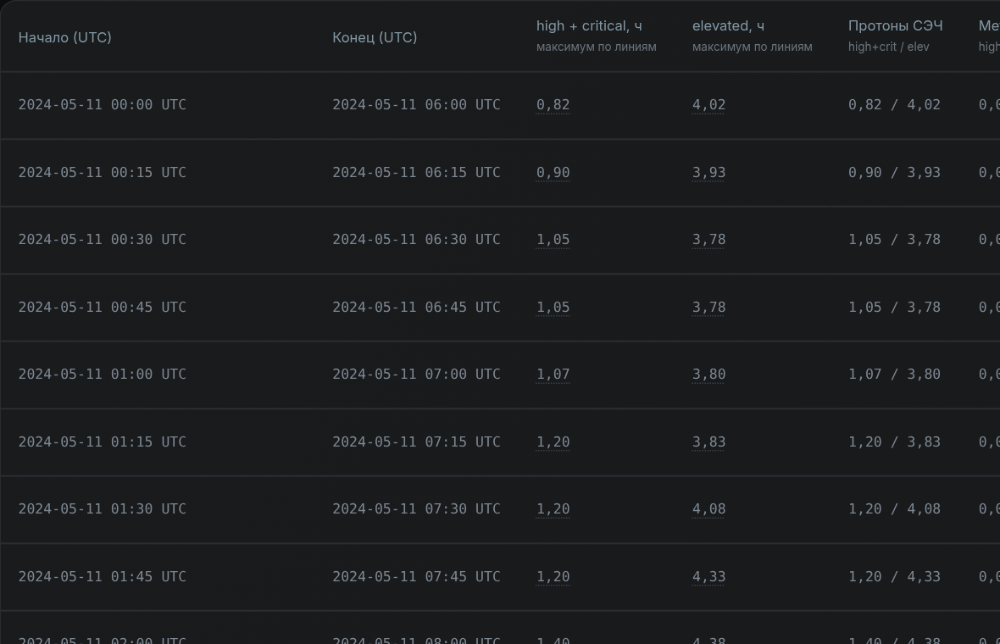
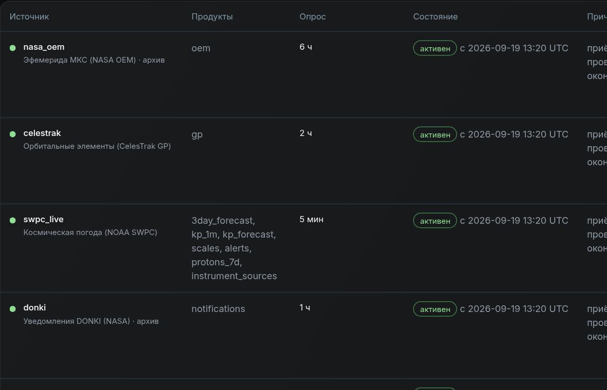

Когда выходить в открытый космос: внешние риски по минутам трассы МКС
Сервис для группы планирования ВКД. Берёт открытые данные сам, считает трассу станции и отвечает: оставить окно, перенести его или честно сказать, что оснований для выбора нет.
Аналитику нужен не уровень бури, а ответ про конкретное окно выхода
Запрос
Начало и длительность выхода (1–8 ч), период допустимого начала до 24 ч, режим: сейчас, разбор по архиву или прогноз из прошлого.
Ответ
Интервалы по каждому механизму, сравнение всех окон той же длительности, рекомендация с причиной или отказ от выбора. У каждого числа ссылка на сырую запись.
Допуск к ВКД сервис не выдаёт и дозу человека не считает: оцениваемая величина названа в каждом ответе.
Механизм 1 · космическая погода
Солнечные протоны. Опасны только на тех минутах витка, где магнитное поле Земли пропускает их к станции.
Механизм 2 · метеороиды
Фактор планирования по прогнозу NASA MEO, не оценка риска для экипажа. В мае–июне 2024 до high не доходит; в разобранных сутках окно не меняла.
Сверх обязательного
Сближения как конфликт планирования, прокси дозы среды, геометрия доступа, освещённость, сводка для экипажа.
Расчёт видит только то, что было опубликовано к моменту прогноза
- NOAA SWPC и архив NCEI: прогнозы на 3 суток, вероятность протонного события, Kp
- GOES-18 SGPS: 13 каналов протонов, интегральные потоки считаем сами
- NASA: эфемерида МКС, сообщения DONKI, почасовые данные прогноза метеоров MEO
- GFZ Kp, CelesTrak GP и SOCRATES
- Недостающие сутки архива сервис скачивает сам при первом расчёте
У каждой записи
Время публикации (точное из продукта или выведенное только в позднюю сторону), версия данных и sha256. Запись без времени публикации в прогноз из прошлого не попадает.
У каждого интервала
наблюдениевнешний прогнознаш расчёт
Нет данных это «нет данных», а не «спокойно».
Поток на геостационаре это обстановка. Опасность для выхода только на открытых витках
- Магнитная широта в каждой точке трассы (AACGM-v2)
- Граница доступа протонов 30 MeV по измерениям SAMPEX: 63,4°, в бурю ниже по Kp, 55,2° при Kp 9
- high и critical ставятся только на минутах доступа
Витки известны по эфемериде и прогнозу Kp заранее, ещё до первого измерения потока.

Все окна той же длительности, правила на виду
- Кандидаты с шагом 15 минут, часы по каждой линии отдельно; ранжирование взвешенной суммой часов с правилом на виду
- Окно с critical исключается, линия без данных исключает окно
- Запрошенное окно остаётся, если оно не хуже лучшего; иначе ближайшее чистое
- Смена длительности это новый план, а не улучшение

11 мая 2024, данные до 10 мая 12:30: какое окно выбрал каждый подход
| подход | что предсказал | выбранное окно | экспозиция по реконструкции в окне | заблаговременность |
|---|---|---|---|---|
| наш расчёт | high на 111 минутах доступа по трассе | 09:30–15:30 | 0 мин | 828 мин |
| персистентность | последнее доступное измерение (3 мая, давность 6,5 сут): ниже S1 | 04:00–10:00 | 74 мин | нет |
| единственное предупреждение | 3-day forecast: «below S-scale» | 04:00–10:00 | 74 мин | нет |
| прогноз SWPC без орбиты | вероятность S1+ 55 % на сутки | 04:00–10:00 | 74 мин | 828 мин |
Событие, промах и контроль, плюс периоды вне тестового
11 мая 2024 · событие
Предупреждение за 13 ч 48 мин; перенос совпал с окном по реконструкции. Правила окна настраивались на этих сутках: это не независимая проверка.
8 июня 2024 · промах всех подходов
Вспышка после момента прогноза, SWPC давал 10 %. Сервис первой фразой пишет, что поток не измерен.
13 июня 2024 · контроль
Ни одной ложной тревоги по протонам. Порог high метеоров поднят до 5,0 после этих суток (было 893 мин high).
Проверка после события рядом с рекомендацией, но отдельно от расчёта

Что ответ говорит и чего не говорит
Не делаем
- Дозу человека, пробой скафандра, допуск к ВКД
- Единый индекс риска: уровень каждой линии отдельно, critical или нет данных по любой линии исключают окно
- Смешение шкал G, S и R; Kp только сдвигает границу доступа
- Проверку за независимую: правила окна настроены на 11 мая 2024, порог метеоров на 13 июня, факт считает та же модель
Сверх обязательного
- Сводка для экипажа: модель формулирует, каждое число сверено с расчётом
- Прокси дозы среды по спектру GOES и ICRP 116, с подписью «не доза человека»
- Геометрия доступа при Kp 9: какие окна закрыты даже в худшую бурю
- Сближения SOCRATES как конфликт планирования
- Докачка архива под другие даты по первому запросу
Один путь аналитика


Выбор окна внутри суток, а не только «буря есть или нет»
Два механизма, три режима, прогноз из прошлого с честным отсечением и сравнением с простыми подходами прямо в сервисе. Каждое число ведёт к сырой записи.
Код и инструкция запуска: gitverse.ru/hackrus.experts/kosmo-piter_misis_go_15